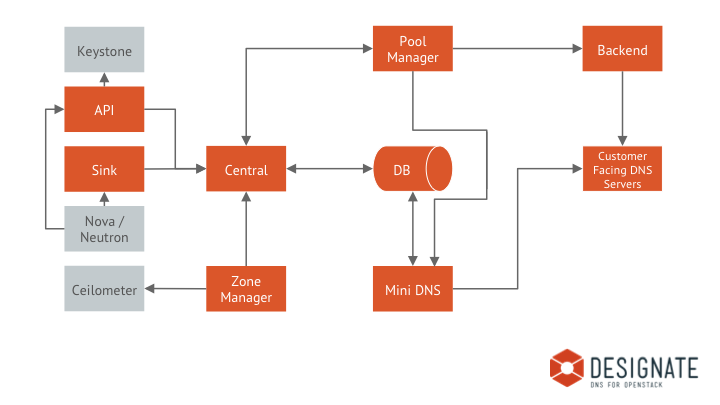

Architecture¶
High Level Topology¶
Designate API¶
designate-api provides the standard OpenStack style REST API service, accepting HTTP requests, validating authentication tokens with Keystone and passing them to the Designate Central service over AMQP. Multiple versions of the API can be hosted, as well as API extensions, allowing for pluggable extensions to the core API.
Although designate-api is capable of handling HTTPS traffic, it’s typical to terminate HTTPS elsewhere, for example by placing nginx in front of designate-api or by letting the external facing load balancers terminate HTTPS.
Designate Central¶
designate-central is the service that handles RPC requests via the MQ, it coordinates the persistent storage of data and applies business logic to data from the API. Storage is provided via plugins, typically SQLAlchemy, although MongoDB or other storage drivers should be possible.
Designate MiniDNS¶
designate-mdns is the service that sends DNS NOTIFY and answers zone transfer (AXFR) requests. This allows Designate to integrate with any DNS server that supports these very standard methods of communicating. designate-mdns also encapsulates all other forms of DNS protocol that Designate performs. For example, sending SOA queries to check that a change is live.
Designate Pool Manager¶
designate-pool-manager is a service that manages the states of the DNS servers Designate manages. The Pool Manager is configured to know which DNS servers Designate manages, and their type of backend (PowerDNS, BIND9, etc). It can also divide those servers into ‘Pools’ so that zones within Designate can be split across different sets of backend servers. The Pool Manager is also responsible for making sure that backend DNS servers are in sync with the Designate database.
Designate Zone Manager¶
designate-zone-manager is a service that handle all periodic tasks relating to the zone shard it is responsible for. A zone shard is a collection of zones allocated based on first three characters of zone UUID.
The current implemented periodic tasks in zone manager include emitting dns.zone.exists events for Ceilometer, purging deleted zones from database, polling secondary zones at their refresh intervals, and generating delayed NOTIFY transactions.
Designate Sink¶
designate-sink is an optional service which listens for event Notifications, such as compute.instance.create.end, handlers are available for Nova and Neutron. Notification events can then be used to trigger record creation & deletion.
The current sink implementations generate simple forward lookup A records, using a format specified in handler-nova configuration. Any field in the event notification can be used to generate a record.
DNS Backend¶
Backends are drivers for a particular DNS server. Designate supports multiple backend implementations, PowerDNS, BIND, NSD, DynECT, you are also free to implement your own backend to fit your needs, as well as extensions to provide extra functionality to complement existing backends.
Message Queue¶
Designate uses oslo.rpc for messaging between components, therefore it inherits a requirement for a supported messaging bus (such as RabbitMQ, Qpid or ZeroMQ). Typically this means a RabbitMQ setup is dedicated to Designate, but as only a single virtualhost is required for a normal installation, you’re free to use other RabbitMQ instances as you see fit.
Database/Storage¶
Storage drivers are drivers for a particular SQL/NoSQL server. Designate needs a SQLAlchemy-supported storage engine for the persistent storage of data. The recommended driver is MySQL.
Memory caching¶
Designate also uses an in-memory caching system, currently implemented with Memcached, as an optional cache for Pool Manager. See Memory caching